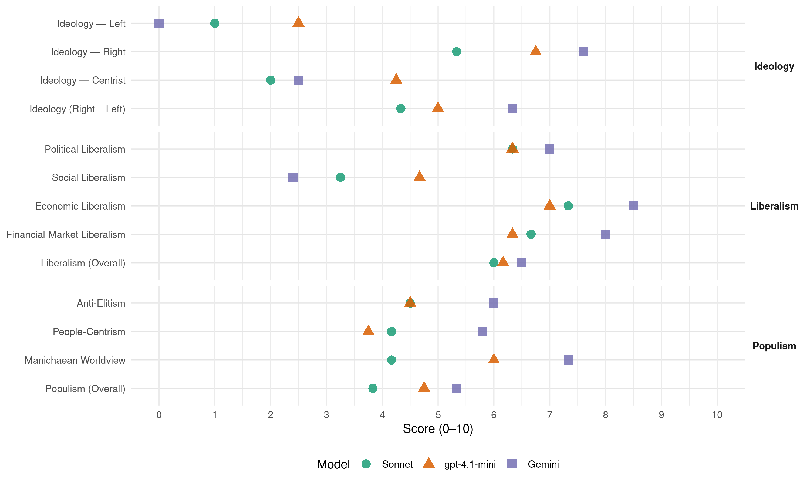

FSC (Chile, 2021)
manifesto_id 155062_202111
Get full text: This site shows derived annotations and short verbatim quotes only. The full manifesto text is © Manifesto Project / WZB — obtain it via manifesto-project.wzb.eu using the manifesto_id above.
Headline scores
| Dimension | Sonnet | gpt-4.1-mini | Gemini |
|---|---|---|---|
| Populism (Overall) | 3.8 | 4.8 | 5.3 |
| Anti-Elitism | 4.5 | 4.5 | 6.0 |
| People-Centrism | 4.2 | 3.8 | 5.8 |
| Manichaean Worldview | 4.2 | 6.0 | 7.3 |
| Ideology (Right − Left) | 4.3 | 5.0 | 6.3 |
| Liberalism (Overall) | 6.0 | 6.2 | 6.5 |
| Political Liberalism | 6.3 | 6.3 | 7.0 |
| Social Liberalism | 3.2 | 4.7 | 2.4 |
| Economic Liberalism | 7.3 | 7.0 | 8.5 |
| Financial-Market Liberalism | 6.7 | 6.3 | 8.0 |
Evidence per dimension
Economic Liberalism
Gemini · score 9.0 · verified · chunk 1
“reducir impuestos y eliminar regulaciones”
Nuestra propuesta económica-social consiste en 5 políticas públicas claves: disminuir el gasto público; reducir impuestos y eliminar regulaciones; crear un Estado moderno
Gemini · score 9.0 · verified · chunk 2
“promoviendo la libertad y la competencia como ejes del libre mercado”
proteger su funcionamiento, promoviendo la libertad y la competencia como ejes del libre mercado. En ese sentido, y a partir de los escándalos
Gemini · score 9.0 · verified · chunk 3
“libre competencia y el libre comercio”
Estado de Derecho, la propiedad privada, la libre competencia y el libre comercio, en un marco de apertura al comercio internacional.
Gemini · score 9.0 · verified · chunk 4
“libre competencia y flexibilidad”
desarrollo de todas las tecnologías de conversión eléctrica en un contexto de libre competencia y flexibilidad, que defina
Gemini · score 8.0 · verified · chunk 5
“privatizada vía venta directa o a través”
Alternativamente, TVN será privatizada vía venta directa o a través de un sistema de capitalismo popular
Gemini · score 7.0 · verified · chunk 6
“desarrollar una actividad económica en torno a la cultura”
sean empresas o personas naturales que quieran desarrollar una actividad económica en torno a la cultura. Esta ley, además, deberá incentivar la creación
gpt-4.1-mini · score 9.0 · verified · chunk 1
“defendemos, resuelta y férreamente, la libre iniciativa privada en materia económica”
Uno de nuestros principales compromisos es hacer de Chile un país libre de todas las pobrezas y de los males asociados a ella; que cada persona se desarrolle de manera autónoma y que todos los chilenos obtengan su máximo desarrollo material y espiritual posible, en igualdad de condiciones, sin caer en el asistencialismo estatal. Defendemos, resuelta y férreamente, la libre iniciativa privada en materia económica. Fomentamos el derecho de propiedad para todos. Combatimos los abusos y las colusiones, vengan de donde vengan, pues la competencia es crucial para la eficiencia y para la equidad de un sistema de libre mercado.
gpt-4.1-mini · score 7.0 · verified · chunk 2
“reducir la tasa de impuesto a las empresas al 17%”
…Reducir la tasa de impuesto a las empresas al 17%. Las utilidades reinvertidas por los dueños no pagarán impuestos. Integrar el sistema tributario en un 100%. Eliminar prácticamente todas las exenciones tributarias especiales, con excepciones en pequeñas empresas…
gpt-4.1-mini · score 8.0 · verified · chunk 3
“libre competencia, la propiedad privada, respeto del Estado de Derecho”
Para que esta prolifere requiere de condiciones tales como la libertad de emprendimiento, la propiedad privada, respeto del Estado de Derecho y promoción de la libre competencia, principios enmarcados en lo que denominamos Economía Social de Mercado.
gpt-4.1-mini · score 7.0 · verified · chunk 4
“Propiciaremos el desarrollo de todas las tecnologías de conversión eléctrica en un contexto de libre competencia”
…de pequeña capacidad unitaria, que se convertirán en el mediano plazo en alternativas viables y seguras. Profundizaremos la evaluación y aplicación de tecnologías para la producción de biomasa de tercera generación para el transporte, como para procesos industriales y producción eléctrica. De esta manera se caracterizará la capacidad nacional de BECSC (9) y CDC (10) así como las posibilidades reales de su aplicación en los NDCs (11). Propiciaremos el desarrollo de todas las tecnologías de conversión eléctrica en un contexto de libre competencia y flexibilidad, que defina un balance entre un sistema diversificado con las mejores opciones, sin subsidios ni beneficios…
gpt-4.1-mini · score 6.0 · verified · chunk 5
“promoveremos un programa de acompañamiento para mujeres víctimas de violencia, potenciando las redes familiares”
…reformularemos la actual legislación de pensiones alimenticias para evitar la violencia económica, donde el Estado tendrá un rol activo en el cobro de esta y se creará un subsidio para familias con hijos pequeños que están en situación de vulnerabilidad. Potenciaremos un programa de acompañamiento para mujeres víctimas de violencia, potenciando las redes familiares…
gpt-4.1-mini · score 5.0 · verified · chunk 6
“Se propone crear una nueva ley de mecenazgo que facilite las iniciativas culturales”
Se propone crear una nueva ley de mecenazgo que facilite las iniciativas culturales de los privados, sean empresas o personas naturales que quieran desarrollar una actividad económica en torno a la cultura. Esta ley, además, deberá incentivar la creación, construcción y mantención de infraestructura arquitectónica (teatros, bibliotecas, museos, galerías o salas de concierto), a través de incentivos tributarios de hasta un 100% deducibles sobre una base imponible, dependiendo del impacto social que tengan a nivel de barrio, comuna, ciudad, región o país.
Sonnet · score 8.0 · verified · chunk 1
“libre iniciativa privada en materia económica”
Defendemos, resuelta y férreamente, la libre iniciativa privada en materia económica. Fomentamos el derecho de propiedad para todos.
Sonnet · score 8.0 · verified · chunk 2
“reducción de impuestos, eliminación de regulaciones”
cinco grandes pilares: reducción del gasto público…reducción de impuestos, eliminación de regulaciones que ponen freno a la inversión y el empleo
Sonnet · score 8.0 · verified · chunk 3
“libertad de emprendimiento, la propiedad privada”
requiere de condiciones tales como la libertad de emprendimiento, la propiedad privada, respeto del Estado de Derecho y promoción de la libre competencia
Sonnet · score 7.0 · verified · chunk 4
“libre competencia y flexibilidad”
Propiciaremos el desarrollo de todas las tecnologías de conversión eléctrica en un contexto de libre competencia y flexibilidad, que defina un balance entre un sistema diversificado con las mejores opciones, sin subsidios ni beneficios
Sonnet · score 7.0 · verified · chunk 5
“marco regulatorio más competitivo, en beneficio”
para ofrecer las mejores soluciones de vivienda y barrios a sectores vulnerables, emergentes y medios, en un marco regulatorio más competitivo, en beneficio de toda la población.
Sonnet · score 6.0 · verified · chunk 6
“nueva ley de mecenazgo que facilite las iniciativas culturales”
Se propone crear una nueva ley de mecenazgo que facilite las iniciativas culturales de los privados, sean empresas o personas naturales
Financial-Market Liberalism
Gemini · score 8.0 · verified · chunk 2
“ponerle fin al monopolio de Transbank, generando mejores condiciones”
fortalecer la competencia en todo el mercado, r de ponerle fin al monopolio de Transbank, generando mejores condiciones para los usuarios y una mayor penetración del dinero
Gemini · score 8.0 · verified · chunk 3
“facilitar el ingreso al mercado de capitales”
contratar compañías de calificación riesgo y facilitar el ingreso al mercado de capitales: Para acceder al mercado de capitales
Gemini · score 8.0 · verified · chunk 4
“compras de letras hipotecarias”
Compañías de Seguros puedan participar en compras de letras hipotecarias y/o Mutuos para financiar
Gemini · score 8.0 · verified · chunk 5
“garantía para créditos ganaderos, sino también”
servir dicha información como garantía para créditos ganaderos, sino también para favorecer las exportaciones
gpt-4.1-mini · score 7.0 · verified · chunk 1
“modernizando los tratados de libre comercio”
Esta imagen estará al servicio de los intereses de Chile en el comercio y finanzas mundiales, al reforzamiento de los lazos culturales con países afines y al entendimiento entre las grandes potencias de las cuales depende la paz mundial. Consecuentemente, potenciaremos la inserción económica de Chile en la economía mundial, modernizando los tratados de libre comercio, crearemos una agenda de valores democráticos y culturales, así como una red de consultas estratégicas y seguridad.
gpt-4.1-mini · score 5.0 · verified · chunk 2
“eliminar impuestos de timbres y estampillas y su reemplazo por cobro de I.V.A. a los servicios financieros”
…Eliminación de impuesto de timbres y estampillas y su reemplazo por cobro de I.V.A. a los servicios financieros. Reducir la tasa de impuesto a las empresas al 17%. Las utilidades reinvertidas por los dueños no pagarán impuestos…
gpt-4.1-mini · score 7.0 · verified · chunk 3
“la Superintendencia de Salud para recabar y publicar información referida a precios y resultados clínicos”
Transparencia total: Se da facultades a la Superintendencia de Salud para recabar y publicar información referida a precios y resultados clínicos de los diversos prestadores de salud, clínicas, hospitales, centros médicos, laboratorios, con el propósito de otorgarle más transparencia al mercado de la salud.
Sonnet · score 7.0 · verified · chunk 1
“reduciremos la tasa de impuesto a las empresas”
reduciremos la tasa de impuesto a las empresas de 27% a 17%, la tasa que posibilitó por largo tiempo un alto crecimiento
Sonnet · score 7.0 · verified · chunk 2
“Más competencia e información Bancaria”
Más competencia e información Bancaria. La inmensa mayoría de los usuarios desconoce la información que recibe y no está preparado para enfrentar adecuadamente a un Banco a la hora de negociar un crédito
Sonnet · score 7.0 · verified · chunk 3
“competencia en el mercado de capitales”
subsidio CORFO para contratar una clasificadora externa de riesgo… para acceder al mercado de capitales emitiendo bonos o efectos de comercio
Sonnet · score 6.0 · verified · chunk 4
“aspectos accionarios y financieros”
para el buen funcionamiento, desarrollo y estabilidad del mercado de todas las formas de energía, incluyendo sus aspectos accionarios y financieros.
Sonnet · score 7.0 · verified · chunk 5
“impulsaremos el uso de líneas para recambio”
En cuanto a la banca, impulsaremos el uso de líneas para recambio de variedades frutícolas, las que dependen de cada agricultor y sus producciones
Sonnet · score 6.0 · verified · chunk 6
“TVN será privatizada vía venta directa”
Alternativamente, TVN será privatizada vía venta directa o a través de un sistema de capitalismo popular
Political Liberalism
Gemini · score 6.0 · verified · chunk 1
“respeto riguroso y universal del Estado de Derecho”
Creemos en el respeto riguroso y universal del Estado de Derecho y en el deber intransable del Ejecutivo de asegurar su respeto por parte de todos.
Gemini · score 7.0 · verified · chunk 2
“la democratización de la elección de representantes locales”
consideramos que la democratización de la elección de representantes locales que ejecuten el presupuesto es un proceso consistente con
Gemini · score 8.0 · verified · chunk 3
“apego irrestricto al Estado de Derecho”
Garantizar la libertad de emprendimiento mediante un apego irrestricto al Estado de Derecho, la propiedad privada, la libre competencia
Gemini · score 7.0 · verified · chunk 4
“independencia de la política”
se adapte en forma flexible y con la mínima tramitación a las nuevas tecnologías que ofrezca la mayor independencia de la política.
Gemini · score 7.0 · verified · chunk 5
“cumplimiento cabal de las políticas de transparencia”
deberá velar por el cumplimiento cabal de las políticas de transparencia estipulados en el reglamento del Ministerio
Gemini · score 4.0 · mixed · chunk 6
“renuncia total a las convicciones más básicas de un estado democrático”
capitulación frente a la violencia y una renuncia total a las convicciones más básicas de un estado democrático. Han pasado muchos meses y la estatua aún no
gpt-4.1-mini · score 8.0 · verified · chunk 1
“el respeto riguroso y universal del Estado de Derecho”
Nuestro mensaje es claro: creemos en el respeto riguroso y universal del Estado de Derecho y en el deber intransable del Ejecutivo de asegurar su respeto por parte de todos. Rechazamos la violencia en todas sus formas: la delincuencia, el narcotráfico y el terrorismo, íntimamente ligados entre sí por poderosos intereses económicos y por redes ideológicas violentas que pretenden subvertir la democracia.
gpt-4.1-mini · score 4.0 · verified · chunk 2
“La Constitución y las leyes chilenas deben tener precedencia sobre pactos o tratados internacionales”
…La Constitución y las leyes chilenas deben tener precedencia sobre pactos o tratados internacionales aprobados y ratificados por nuestro país. Chile respeta el Derecho Internacional sosteniendo a la vez el principio de Supremacía Soberana…
gpt-4.1-mini · score 8.0 · verified · chunk 3
“derecho constitucional a educar a sus hijos”
Todo padre tiene un derecho constitucional a educar a sus hijos en sus valores, creencias y toda forma de vida buena.
gpt-4.1-mini · score 7.0 · verified · chunk 4
“Promover la participación transparente de los diferentes grupos de interés en el desarrollo del sector eléctrico”
…de energía eléctrica. Promover la participación transparente de los diferentes grupos de interés en el desarrollo del sector eléctrico y en el desarrollo del proceso regulatorio, con el objetivo de lograr una regulación transversal estable que se adapte en forma flexible y con la mínima tramitación a las nuevas tecnologías que ofrezca la mayor independencia de la política. Modernizar la Dirección General de Aguas (DGA) y la institucionalidad relativa al recurso hídrico…
gpt-4.1-mini · score 8.0 · verified · chunk 5
“la defensa y promoción de la cultura, una cultura surgida de los propios chilenos”
…la defensa y promoción de la cultura, una cultura surgida de los propios chilenos provenientes de todos los rincones de esta tierra, sus recuerdos y esperanzas, dolores y alegrías, constituye la principal defensa de la comunidad en su conjunto. Nuestra historia patria y sus costumbres constituyen un legado trascendente…
gpt-4.1-mini · score 3.0 · verified · chunk 6
“El Estado debe defender la democracia, con todo el rigor de la ley”
El Estado debe defender la democracia, con todo el rigor de la ley. Reafirmamos nuestro compromiso con la paz y el desarrollo, con la ley y el orden, y hacemos un llamado al Gobierno, al Congreso y al resto de las instituciones a ejecutar todas las acciones que sean necesarias para reponer el Estado de Derecho que ha sido vulnerado en Santiago, Valparaíso, Antofagasta y decenas de ciudades en el resto del país, con todas las herramientas que dispone la ley.
Sonnet · score 6.0 · mixed · chunk 1
“respeto irrestricto al Estado de Derecho”
Sin el respeto irrestricto al Estado de Derecho, nuestro país terminará por seguir el camino nefasto de esos países que ahora están sumidos en la violencia
Sonnet · score 5.0 · mixed · chunk 2
“restablecimiento de la democracia y la libertad”
Nuestro país debe liderar, con el ejemplo, el restablecimiento de la democracia y la libertad en esas naciones. Retiraremos a Chile del Consejo de Derechos Humanos de la ONU.
Sonnet · score 7.0 · verified · chunk 3
“respeto del Estado de Derecho”
requiere de condiciones tales como la libertad de emprendimiento, la propiedad privada, respeto del Estado de Derecho y promoción de la libre competencia
Sonnet · score 6.0 · verified · chunk 4
“Despolitizar la evaluación ambiental”
Despolitizar la evaluación ambiental, especialmente las instancias de la comisión de evaluación y comité de ministros, y que la Resolución de Calificación Ambiental sea otorgada por el SEA.
Sonnet · score 6.0 · verified · chunk 5
“estabilidad democrática de las naciones”
a pesar de la capital importancia de la cultura en la realización personal, progreso económico y estabilidad democrática de las naciones.
Sonnet · score 5.0 · mixed · chunk 6
“defender la democracia, con todo el rigor de la ley”
el Estado debe defender la democracia, con todo el rigor de la ley. Reafirmamos nuestro compromiso con la paz
Liberalism (Overall)
Gemini · score 6.0 · verified · chunk 1
“reducir impuestos y eliminar regulaciones”
Nuestra propuesta económica-social consiste en 5 políticas públicas claves: disminuir el gasto público; reducir impuestos y eliminar regulaciones; crear un Estado moderno
Gemini · score 7.0 · verified · chunk 2
“promoviendo la libertad y la competencia como ejes del libre mercado”
proteger su funcionamiento, promoviendo la libertad y la competencia como ejes del libre mercado. En ese sentido, y a partir de los escándalos
Gemini · score 7.0 · verified · chunk 3
“libre competencia y el libre comercio”
Estado de Derecho, la propiedad privada, la libre competencia y el libre comercio, en un marco de apertura al comercio internacional.
Gemini · score 8.0 · verified · chunk 4
“libre competencia y flexibilidad”
desarrollo de todas las tecnologías de conversión eléctrica en un contexto de libre competencia y flexibilidad, que defina
Gemini · score 7.0 · verified · chunk 5
“privatizada vía venta directa o a través”
Alternativamente, TVN será privatizada vía venta directa o a través de un sistema de capitalismo popular
Gemini · score 4.0 · verified · chunk 6
“derecho a igualdad ante la ley y el derecho a la cultura”
Creemos que se podría estar atentando contra el derecho a igualdad ante la ley y el derecho a la cultura. Esto les permitiría tener competencias que les podrían
gpt-4.1-mini · score 7.0 · verified · chunk 1
“defendemos, resuelta y férreamente, la libre iniciativa privada en materia económica”
Uno de nuestros principales compromisos es hacer de Chile un país libre de todas las pobrezas y de los males asociados a ella; que cada persona se desarrolle de manera autónoma y que todos los chilenos obtengan su máximo desarrollo material y espiritual posible, en igualdad de condiciones, sin caer en el asistencialismo estatal. Defendemos, resuelta y férreamente, la libre iniciativa privada en materia económica. Fomentamos el derecho de propiedad para todos.
gpt-4.1-mini · score 5.0 · verified · chunk 2
“Reducir la tasa de impuesto a las empresas al 17%”
…Reducir la tasa de impuesto a las empresas al 17%. Las utilidades reinvertidas por los dueños no pagarán impuestos. Integrar el sistema tributario en un 100%. Eliminar prácticamente todas las exenciones tributarias especiales, con excepciones en pequeñas empresas…
gpt-4.1-mini · score 7.0 · verified · chunk 3
“libre competencia, la propiedad privada, respeto del Estado de Derecho”
Para que esta prolifere requiere de condiciones tales como la libertad de emprendimiento, la propiedad privada, respeto del Estado de Derecho y promoción de la libre competencia, principios enmarcados en lo que denominamos Economía Social de Mercado.
gpt-4.1-mini · score 7.0 · verified · chunk 4
“Propiciaremos el desarrollo de todas las tecnologías de conversión eléctrica en un contexto de libre competencia”
…capacidades reales de su aplicación en los NDCs (11). Propiciaremos el desarrollo de todas las tecnologías de conversión eléctrica en un contexto de libre competencia y flexibilidad, que defina un balance entre un sistema diversificado con las mejores opciones, sin subsidios ni beneficios, orientado a obtener precios finales que contribuyan a la competitividad de los distintos sectores productivos del país. Eliminaremos el uso de carbones de mala calidad en la generación termoeléctrica a carbón y adoptaremos medidas de abatimiento de gases contaminantes…
gpt-4.1-mini · score 7.0 · verified · chunk 5
“la defensa y promoción de la cultura, una cultura surgida de los propios chilenos”
…la defensa y promoción de la cultura, una cultura surgida de los propios chilenos provenientes de todos los rincones de esta tierra, sus recuerdos y esperanzas, dolores y alegrías, constituye la principal defensa de la comunidad en su conjunto. Nuestra historia patria y sus costumbres constituyen un legado trascendente…
gpt-4.1-mini · score 4.0 · verified · chunk 6
“El Estado debe defender la democracia, con todo el rigor de la ley”
El Estado debe defender la democracia, con todo el rigor de la ley. Reafirmamos nuestro compromiso con la paz y el desarrollo, con la ley y el orden, y hacemos un llamado al Gobierno, al Congreso y al resto de las instituciones a ejecutar todas las acciones que sean necesarias para reponer el Estado de Derecho que ha sido vulnerado en Santiago, Valparaíso, Antofagasta y decenas de ciudades en el resto del país, con todas las herramientas que dispone la ley.
Sonnet · score 6.0 · mixed · chunk 1
“economía de libre mercado”
la libertad, el orden, el Estado de Derecho, la propiedad privada y la economía de libre mercado, todos los anteriores, cimientos en los que se sostuvieron las décadas más exitosas
Sonnet · score 6.0 · mixed · chunk 2
“libertad y la competencia como ejes del libre mercado”
promoviendo la libertad y la competencia como ejes del libre mercado. En ese sentido, y a partir de los escándalos públicos de la última década, es que resulta necesario aumentar los recursos
Sonnet · score 6.0 · verified · chunk 3
“libre competencia y el libre comercio”
Garantizar la libertad de emprendimiento mediante un apego irrestricto al Estado de Derecho, la propiedad privada, la libre competencia y el libre comercio
Sonnet · score 6.0 · verified · chunk 4
“libre competencia y flexibilidad”
Propiciaremos el desarrollo de todas las tecnologías de conversión eléctrica en un contexto de libre competencia y flexibilidad, que defina un balance entre un sistema diversificado con las mejores opciones, sin subsidios ni beneficios
Sonnet · score 6.0 · mixed · chunk 5
“marco regulatorio más competitivo, en beneficio”
para ofrecer las mejores soluciones de vivienda y barrios a sectores vulnerables, emergentes y medios, en un marco regulatorio más competitivo, en beneficio de toda la población.
Sonnet · score 5.0 · mixed · chunk 6
“facilite las iniciativas culturales de los privados”
nueva ley de mecenazgo que facilite las iniciativas culturales de los privados, sean empresas o personas naturales
Anti-Elitism
Gemini · score 8.0 · verified · chunk 1
“casta de privilegiados. Nos rebelamos contra los abusos”
No aceptamos que los políticos y los empleados públicos se conviertan en una casta de privilegiados. Nos rebelamos contra los abusos de aquellos poderosos que viven de la burocracia
Gemini · score 6.0 · verified · chunk 2
“la captura de ciertas reparticiones administrativas por parte de los partidos”
feudalización de la política”, referido a la captura de ciertas reparticiones administrativas por parte de los partidos de la Concertación, llevando adelante lo que algunos observadores
Gemini · score 4.0 · verified · chunk 3
“que los políticos los pueden utilizar”
que nadie se los va a quitar. La sensación actual de que los políticos los pueden utilizar para sus propios fines genera desconfianza
Gemini · score 4.0 · verified · chunk 4
“injerencias disfuncionales del escalón político”
competencias entre órganos del Estado, evitando las injerencias disfuncionales del escalón político. Racionalizar, simplificar
Gemini · score 6.0 · verified · chunk 5
“surgimiento de una “élite cultural” dependiente”
decantado en el surgimiento de una “élite cultural” dependiente del aparato público y, por ende, altamente politizada.
Gemini · score 8.0 · verified · chunk 6
“Desde la elite política y social, se repiten”
en un lugar. Desde la elite política y social, se repiten frases genéricas de aceptación como “todos somos migrantes”
gpt-4.1-mini · score 7.0 · verified · chunk 1
“una élite política irresponsable que maleducó por décadas a varias generaciones”
…un amplio margen de la sociedad chilena no se insertó culturalmente en las características más profundas del cambio vivido, puesto que éste cambio fue, al poco andar, distorsionado y manipulado por una élite política irresponsable que maleducó por décadas a varias generaciones, dando por hecho que el progreso se daba por sí solo quedándose, simultáneamente, indiferentes ante los fundamentos sociales y morales del desarrollo.
gpt-4.1-mini · score 6.0 · verified · chunk 2
“funcionarios no electos que se inmiscuyen permanentemente en los asuntos internos de Chile”
…proliferación de funcionarios no electos que se inmiscuyen permanentemente en los asuntos internos de Chile, en alianza con otras entidades no gubernamentales, chilenas y extranjeras, que han creado su propia agenda de control político, económico y cultural. La Constitución y las leyes chilenas deben tener precedencia…
gpt-4.1-mini · score 2.0 · verified · chunk 3
“la propuesta de la izquierda que busca desmunicipalizar la educación, solo pretende agrandar el Estado”
Mejoraremos la educación pública empoderando a los municipios y sus directores: La propuesta de la izquierda que busca desmunicipalizar la educación, solo pretende agrandar el Estado, centralizando la educación de los niños más vulnerables y sin mejorar la calidad de nuestras escuelas y liceos.
gpt-4.1-mini · score 3.0 · verified · chunk 6
“Desde la elite política y social, se repiten frases genéricas de aceptación”
Desde la elite política y social, se repiten frases genéricas de aceptación como “todos somos migrantes” o se replican cifras y datos sobre baja criminalidad, alta escolaridad y supuesto aporte impositivo de los migrantes a la comunidad nacional que justificarían su inclusión total a nuestro país.
Sonnet · score 7.0 · verified · chunk 1
“élite política irresponsable que maleducó por décadas”
distorsionado y manipulado por una élite política irresponsable que maleducó por décadas a varias generaciones, dando por hecho que el progreso
Sonnet · score 6.0 · verified · chunk 2
“la feudalización de la política”
se hace patente el fenómeno de la “feudalización de la política”, referido a la captura de ciertas reparticiones administrativas por parte de los partidos de la Concertación
Sonnet · score 3.0 · verified · chunk 3
“algunas anquilosadas en lógicas de defensa corporativa”
son las PYMEs y no las grandes empresas, algunas anquilosadas en lógicas de defensa corporativa que distorsionan el funcionamiento del libre mercado
Sonnet · score 2.0 · verified · chunk 4
“minoritarios grupos de presión ambientalistas”
Resulta altamente antidemocrático e ineficiente que las autoridades antepongan la agenda de minoritarios grupos de presión ambientalistas o intereses económicos, por sobre el resto de la población
Sonnet · score 3.0 · verified · chunk 5
“élite cultural” dependiente del aparato público”
La falta de transparencia en la asignación de fondos ha decantado en el surgimiento de una “élite cultural” dependiente del aparato público y, por ende, altamente politizada.
Sonnet · score 6.0 · verified · chunk 6
“Desde la elite política y social, se repiten frases genéricas”
Desde la elite política y social, se repiten frases genéricas de aceptación como ‘todos somos migrantes’
Ideology — Centrist
Gemini · score 2.0 · verified · chunk 1
“rebelarnos ante una mayoría circunstancial”
Llegó la hora, que los que amamos nuestra patria nos rebelemos ante una mayoría circunstancial que lo está destruyendo todo
Gemini · score 3.0 · verified · chunk 4
“injerencias disfuncionales del escalón político”
competencias entre órganos del Estado, evitando las injerencias disfuncionales del escalón político. Racionalizar, simplificar
gpt-4.1-mini · score 5.0 · verified · chunk 1
“estos grupos que operan de forma disipada y horizontal, imponen su agenda colándose a través de nuestras debilitadas instituciones”
En este escenario el poder político se ha vertido sobre grupos de activismo y presión vinculados entre sí y controlados por la izquierda política para llevar a cabo las transformaciones que este sector desea de forma unilateral. Así, estos grupos que operan de forma disipada y horizontal, imponen su agenda colándose a través de nuestras debilitadas instituciones y mintiéndole a la población la idea de que dicha agenda no sería, supuestamente, «ni de izquierda ni de derecha».
gpt-4.1-mini · score 5.0 · verified · chunk 2
“la Constitución y las leyes chilenas deben tener precedencia sobre pactos o tratados internacionales”
…La Constitución y las leyes chilenas deben tener precedencia sobre pactos o tratados internacionales aprobados y ratificados por nuestro país. Chile respeta el Derecho Internacional sosteniendo a la vez el principio de Supremacía Soberana…
gpt-4.1-mini · score 4.0 · verified · chunk 3
“Serán las propias familias el centro del desarrollo educativo”
Serán las propias familias el centro del desarrollo educativo, en un eje triangular de soporte al niño, donde concurren padres, profesores y directores, todo lo anterior bajo la guía y respaldo de sus autoridades locales.
gpt-4.1-mini · score 3.0 · verified · chunk 6
“Hacemos un llamado concreto al Gobierno a que acelere las medidas”
Hacemos un llamado concreto al Gobierno a que acelere las medidas para detener el ingreso de inmigrantes ilegales por los pasos fronterizos no habilitados; para frenar el traslado de inmigrantes ilegales desde las localidades fronterizas a ciudades como Arica, Iquique y Antofagasta; y para ponerle fin al desplazamiento de los migrantes hacia Santiago y otras ciudades del sur.
Sonnet · score 2.0 · verified · chunk 1
“ni de izquierda ni de derecha”
mintiéndole a la población la idea de que dicha agenda no sería, supuestamente, «ni de izquierda ni de derecha»
Sonnet · score 2.0 · verified · chunk 2
“funcionarios no electos que se inmiscuyen”
hay una proliferación de funcionarios no electos que se inmiscuyen permanentemente en los asuntos internos de Chile
Sonnet · score 2.0 · verified · chunk 3
“El Sueño Republicano es ver florecer”
El Sueño Republicano es ver florecer la empresa privada en Chile y para ello creemos que debe haber un apoyo preferente a las PYMES
Sonnet · score 2.0 · verified · chunk 4
“por sobre el resto de la población”
que las autoridades antepongan la agenda de minoritarios grupos de presión ambientalistas o intereses económicos, por sobre el resto de la población
Sonnet · score 2.0 · verified · chunk 5
“interés de la población manifestado en asistencia”
mecanismos de asignación de recursos estatales destinados a cultura que incluya como criterio el interés de la población manifestado en asistencia a eventos
Sonnet · score 2.0 · verified · chunk 6
“reafirmamos nuestro compromiso con la paz y el desarrollo”
Reafirmamos nuestro compromiso con la paz y el desarrollo, con la ley y el orden
Ideology — Left
Gemini · score 0.0 · verified · chunk 1
“fracaso socialista que ha esparcido el terror”
mientras la izquierda falsificaba la historia logrando un lavado gradual de imagen al fracaso socialista que ha esparcido el terror y el hambre por todo el mundo
Gemini · score 0.0 · verified · chunk 2
“La propuesta de la izquierda que busca desmunicipalizar la educación, solo pretende agrandar el Estado”
Mejoraremos la educación pública empoderando a los municipios y sus directores: La propuesta de la izquierda que busca desmunicipalizar la educación, solo pretende agrandar el Estado, centralizando la educación de los niños
gpt-4.1-mini · score 3.0 · verified · chunk 1
“la izquierda falsificaba la historia logrando un lavado gradual de imagen al fracaso socialista”
Mientras la izquierda falsificaba la historia logrando un lavado gradual de imagen al fracaso socialista que ha esparcido el terror y el hambre por todo el mundo, los partidos de derecha tradicional, tal como hemos mencionado, consideraron que los índices macroeconómicos seguirían mejorando, sin interrupción y como por arte de magia, hacia la posteridad, desconsiderando el factor humano…
gpt-4.1-mini · score 3.0 · verified · chunk 2
“grupos y partidos políticos de la extrema izquierda chilena”
…Un grave peligro es la tendencia histórica de regímenes subversivos como Cuba y Venezuela de apoyar por medios ilegales y ocultos a grupos y partidos políticos de la extrema izquierda chilena, frente a lo cual nuestros gobiernos electos han mostrado extrema debilidad y tolerancia…
gpt-4.1-mini · score 2.0 · verified · chunk 3
“la propuesta de la izquierda que busca desmunicipalizar la educación, solo pretende agrandar el Estado”
Mejoraremos la educación pública empoderando a los municipios y sus directores: La propuesta de la izquierda que busca desmunicipalizar la educación, solo pretende agrandar el Estado, centralizando la educación de los niños más vulnerables y sin mejorar la calidad de nuestras escuelas y liceos.
gpt-4.1-mini · score 2.0 · verified · chunk 6
“Se podría estar atentando contra el derecho a igualdad ante la ley”
Muchos de estos programas están actualmente restringidos a personas que califiquen a segmentos socioeconómicos bajos, obviando el legítimo interés por parte de personas que han superado la barrera de la pobreza de participar en los talleres gubernamentales de capacitación. Creemos que se podría estar atentando contra el derecho a igualdad ante la ley y el derecho a la cultura.
Sonnet · score 1.0 · verified · chunk 1
“Combatimos los abusos y las colusiones”
Combatimos los abusos y las colusiones, vengan de donde vengan, pues la competencia es crucial para la eficiencia y para la equidad
Sonnet · score 1.0 · verified · chunk 2
“reducción de impuestos, eliminación de regulaciones”
cinco grandes pilares: reducción del gasto público…reducción de impuestos, eliminación de regulaciones que ponen freno a la inversión y el empleo
Sonnet · score 1.0 · verified · chunk 3
“libre competencia y el libre comercio”
Garantizar la libertad de emprendimiento mediante un apego irrestricto al Estado de Derecho, la propiedad privada, la libre competencia y el libre comercio
Sonnet · score 1.0 · verified · chunk 4
“comunidades pobres y/o vulnerables, son expuestas de manera deliberada”
Tales comunidades, en su gran mayoría pobres y/o vulnerables, son expuestas de manera deliberada y discriminatoria a material particulado, lluvia ácida, gases tóxicos
Sonnet · score 1.0 · verified · chunk 5
“distribución equitativa de los recursos”
se genere una distribución equitativa de los recursos, con oportunidades de trabajo y calidad de vida en todas las regiones del país
Sonnet · score 1.0 · verified · chunk 6
“incentivos tributarios de hasta un 100% deducibles”
a través de incentivos tributarios de hasta un 100% deducibles sobre una base imponible, dependiendo del impacto social
Ideology (Right − Left)
Gemini · score 9.0 · verified · chunk 1
“fronteras seguras para tener un país ordenado”
quienes defienden, además de la libertad, a la familia; a la pequeña empresa como motor de crecimiento, la movilidad social y generación de empleos sustentables; las fronteras seguras para tener un país ordenado y estable
Gemini · score 8.0 · verified · chunk 2
“agendas de movimientos transnacionales ideologizados y de sus aliados antidemocráticos locales”
escaparon al control soberano de Chile y su ciudadanía, al evolucionar para convertirse en agendas de movimientos transnacionales ideologizados y de sus aliados antidemocráticos locales, orientados a hacerse ilegítimamente del poder.
Gemini · score 4.0 · verified · chunk 3
“impedir que se adoctrine por la fuerza”
establecimiento educacional para sus hijos, sino que impedir que se adoctrine por la fuerza a niños sobre diversas ideologías.
Gemini · score 2.0 · verified · chunk 4
“injerencias disfuncionales del escalón político”
competencias entre órganos del Estado, evitando las injerencias disfuncionales del escalón político. Racionalizar, simplificar
Gemini · score 6.0 · verified · chunk 5
“proteger la identidad nacional, el patrimonio”
medidas tendientes a proteger la identidad nacional, el patrimonio y fomentar la participación de actores privados
Gemini · score 9.0 · verified · chunk 6
“Atrévete a Frenar la Inmigración Ilegal”
llegó la hora de recuperar la paz social. En esa línea, proponemos como medidas y acciones urgentes: Atrévete a Frenar la Inmigración Ilegal Desde hace años, y en particular en los últimos meses
gpt-4.1-mini · score 6.0 · verified · chunk 1
“la izquierda falsificaba la historia logrando un lavado gradual de imagen al fracaso socialista”
Mientras la izquierda falsificaba la historia logrando un lavado gradual de imagen al fracaso socialista que ha esparcido el terror y el hambre por todo el mundo, los partidos de derecha tradicional, tal como hemos mencionado, consideraron que los índices macroeconómicos seguirían mejorando, sin interrupción y como por arte de magia, hacia la posteridad, desconsiderando el factor humano…
gpt-4.1-mini · score 6.0 · verified · chunk 2
“Chile debe restablecer y hacer valer el principio de la Supremacía Soberana”
…Chile debe restablecer y hacer valer el principio de la Supremacía Soberana, por cuanto las organizaciones internacionales y sus burocracias son el resultado de decisiones colectivas de los estados contratantes y que no puede haber tutela de ellas sobre los entes que les dieron origen…
gpt-4.1-mini · score 3.0 · verified · chunk 3
“la propuesta de la izquierda que busca desmunicipalizar la educación, solo pretende agrandar el Estado”
Mejoraremos la educación pública empoderando a los municipios y sus directores: La propuesta de la izquierda que busca desmunicipalizar la educación, solo pretende agrandar el Estado, centralizando la educación de los niños más vulnerables y sin mejorar la calidad de nuestras escuelas y liceos.
gpt-4.1-mini · score 5.0 · verified · chunk 6
“Atrévete a Frenar la Inmigración Ilegal Desde hace años”
Atrévete a Frenar la Inmigración Ilegal Desde hace años, y en particular en los últimos meses, en el norte de Chile, se ha venido gestando una catástrofe humanitaria de proporciones que aún estamos a tiempo de contener y resolver.
Sonnet · score 7.0 · verified · chunk 1
“nueva derecha republicana para nuestro país”
Este es el camino que el Partido Republicano, haciéndose cargo de la verdadera lucha por las ideas, ha decidido emprender, representando así un proyecto de nueva derecha republicana para nuestro país.
Sonnet · score 7.0 · verified · chunk 2
“Supremacía Soberana”
Chile debe restablecer y hacer valer el principio de la Supremacía Soberana, por cuanto las organizaciones internacionales y sus burocracias son el resultado de decisiones colectivas
Sonnet · score 2.0 · verified · chunk 3
“La propuesta de la izquierda que busca desmunicipalizar”
La propuesta de la izquierda que busca desmunicipalizar la educación, solo pretende agrandar el Estado, centralizando la educación de los niños más vulnerables
Sonnet · score 2.0 · verified · chunk 4
“minoritarios grupos de presión ambientalistas”
Resulta altamente antidemocrático e ineficiente que las autoridades antepongan la agenda de minoritarios grupos de presión ambientalistas o intereses económicos, por sobre el resto de la población
Sonnet · score 2.0 · verified · chunk 5
“élite cultural” dependiente del aparato público”
La falta de transparencia en la asignación de fondos ha decantado en el surgimiento de una “élite cultural” dependiente del aparato público y, por ende, altamente politizada.
Sonnet · score 6.0 · verified · chunk 6
“Frenar la Inmigración Ilegal”
Atrévete a Frenar la Inmigración Ilegal Desde hace años, y en particular en los últimos meses
Ideology — Right
Gemini · score 9.0 · verified · chunk 1
“fronteras seguras para tener un país ordenado”
quienes defienden, además de la libertad, a la familia; a la pequeña empresa como motor de crecimiento, la movilidad social y generación de empleos sustentables; las fronteras seguras para tener un país ordenado y estable
Gemini · score 8.0 · verified · chunk 2
“agendas de movimientos transnacionales ideologizados y de sus aliados antidemocráticos locales”
escaparon al control soberano de Chile y su ciudadanía, al evolucionar para convertirse en agendas de movimientos transnacionales ideologizados y de sus aliados antidemocráticos locales, orientados a hacerse ilegítimamente del poder.
Gemini · score 6.0 · verified · chunk 3
“impedir que se adoctrine por la fuerza”
establecimiento educacional para sus hijos, sino que impedir que se adoctrine por la fuerza a niños sobre diversas ideologías.
Gemini · score 6.0 · verified · chunk 5
“proteger la identidad nacional, el patrimonio”
medidas tendientes a proteger la identidad nacional, el patrimonio y fomentar la participación de actores privados
Gemini · score 9.0 · verified · chunk 6
“Atrévete a Frenar la Inmigración Ilegal”
llegó la hora de recuperar la paz social. En esa línea, proponemos como medidas y acciones urgentes: Atrévete a Frenar la Inmigración Ilegal Desde hace años, y en particular en los últimos meses
gpt-4.1-mini · score 8.0 · verified · chunk 1
“defendemos, resuelta y férreamente, la libre iniciativa privada en materia económica”
Uno de nuestros principales compromisos es hacer de Chile un país libre de todas las pobrezas y de los males asociados a ella; que cada persona se desarrolle de manera autónoma y que todos los chilenos obtengan su máximo desarrollo material y espiritual posible, en igualdad de condiciones, sin caer en el asistencialismo estatal. Defendemos, resuelta y férreamente, la libre iniciativa privada en materia económica. Fomentamos el derecho de propiedad para todos.
gpt-4.1-mini · score 8.0 · verified · chunk 2
“Chile debe restablecer y hacer valer el principio de la Supremacía Soberana”
…Chile debe restablecer y hacer valer el principio de la Supremacía Soberana, por cuanto las organizaciones internacionales y sus burocracias son el resultado de decisiones colectivas de los estados contratantes y que no puede haber tutela de ellas sobre los entes que les dieron origen…
gpt-4.1-mini · score 3.0 · verified · chunk 3
“proteger el “interés superior del niño” el cual está constituido por el derecho de todo niño a tener un papá y una mamá”
Todo padre tiene un derecho constitucional a educar a sus hijos en sus valores, creencias y toda forma de vida buena. Lo anterior constituye además un derecho vinculante a la oposición de la aprobación del “matrimonio homosexual” y la opción de adopción, protegiendo el “interés superior del niño” el cual está constituido por el derecho de todo niño a tener un papá y una mamá.
gpt-4.1-mini · score 8.0 · verified · chunk 6
“Atrévete a Frenar la Inmigración Ilegal Desde hace años”
Atrévete a Frenar la Inmigración Ilegal Desde hace años, y en particular en los últimos meses, en el norte de Chile, se ha venido gestando una catástrofe humanitaria de proporciones que aún estamos a tiempo de contener y resolver.
Sonnet · score 8.0 · verified · chunk 1
“fronteras seguras para tener un país ordenado”
la pequeña empresa como motor de crecimiento, la movilidad social y generación de empleos sustentables; las fronteras seguras para tener un país ordenado y estable
Sonnet · score 8.0 · verified · chunk 2
“Romper relaciones diplomáticas con Cuba y Venezuela”
Romper relaciones diplomáticas con Cuba y Venezuela. Chile no puede seguir subsidiando políticamente a regímenes dictatoriales de América Latina.
Sonnet · score 3.0 · verified · chunk 3
“derecho a tener un papá y una mamá”
protegiendo el ‘interés superior del niño’ el cual está constituido por el derecho de todo niño a tener un papá y una mamá
Sonnet · score 2.0 · verified · chunk 4
“pleno y total derecho de propiedad”
A los mismos se les deberá respetar su pleno y total derecho de propiedad creando medidas que le protejan y garanticen su buen uso.
Sonnet · score 4.0 · verified · chunk 5
“Reivindicar el idioma castellano, eliminando el lenguaje de género”
Reivindicar el idioma castellano, eliminando el lenguaje de género y de incitación a la lucha de clases, étnica o cualquier doctrina tendiente a la división nacional.
Sonnet · score 7.0 · verified · chunk 6
“Atrévete a Frenar la Inmigración Ilegal”
Atrévete a Frenar la Inmigración Ilegal Desde hace años, y en particular en los últimos meses, en el norte de Chile
Manichaean Worldview
Gemini · score 8.0 · verified · chunk 1
“izquierda tiene un programa para destruir todo”
Todo ello está en juego hoy, porque la izquierda tiene un programa para destruir todo lo establecido y oprimir las libertades de forma permanente.
Gemini · score 6.0 · verified · chunk 2
“agendas de movimientos transnacionales ideologizados y de sus aliados antidemocráticos locales”
escaparon al control soberano de Chile y su ciudadanía, al evolucionar para convertirse en agendas de movimientos transnacionales ideologizados y de sus aliados antidemocráticos locales, orientados a hacerse ilegítimamente del poder.
Gemini · score 8.0 · verified · chunk 6
“Es una fiesta, de odio e intolerancia”
siempre se llega al resultado similar. Es una fiesta, de odio e intolerancia, que va consumiendo el alma de Chile.
gpt-4.1-mini · score 8.0 · verified · chunk 1
“la intolerancia y animadversión hacia el prójimo con base a sus principios morales y éticos”
Los síntomas están a la vista, son varios y reconocibles: la intolerancia y animadversión hacia el prójimo con base a sus principios morales y éticos; el castigo progresivo a la propiedad, la persecución del éxito personal, el fomento de un estado interventor; la identificación de enemigos irreductibles como lo son la empresa privada y el sistema de mercado; la protesta violenta y el vandalismo como justificación a la trasgresión de normas e irrespeto a la autoridad; resurgimiento de un discurso falaz de corte neo-marxista de lucha de sexos, razas, orientaciones sexuales…
gpt-4.1-mini · score 7.0 · verified · chunk 2
“No seremos cómplices!”
…Retiraremos a Chile del Consejo de Derechos Humanos de la ONU. Mientras la ONU ataca a Chile con diversas políticas y falsas acusaciones, el Consejo de DDHH tiene como miembros a Venezuela y Cuba, las dictaduras más sangrientas de América Latina. No seremos cómplices! Racionalidad en la participación en tratados internacionales…
gpt-4.1-mini · score 2.0 · verified · chunk 3
“impedir que se adoctrine por la fuerza a niños sobre diversas ideologías”
Derecho de los padres a educar a sus hijos de acuerdo a sus convicciones y libertad de enseñanza. Asegurar el derecho de los padres a elegir no solamente el establecimiento educacional para sus hijos, sino que impedir que se adoctrine por la fuerza a niños sobre diversas ideologías.
gpt-4.1-mini · score 7.0 · verified · chunk 6
“Es una fiesta, de odio e intolerancia, que va consumiendo el alma de Chile”
Es una fiesta, de odio e intolerancia, que va consumiendo el alma de Chile. El punto final de la incapacidad del gobierno quedó de manifiesto, al informar que la estatua del General Baquedano fuera removida de su lugar, lo que implica una verdadera capitulación frente a la violencia y una renuncia total a las convicciones más básicas de un estado democrático.
Sonnet · score 7.0 · verified · chunk 1
“la izquierda tiene un programa para destruir”
porque la izquierda tiene un programa para destruir todo lo establecido y oprimir las libertades de forma permanente.
Sonnet · score 6.0 · verified · chunk 2
“regímenes subversivos como Cuba y Venezuela”
la tendencia histórica de regímenes subversivos como Cuba y Venezuela de apoyar por medios ilegales y ocultos a grupos y partidos políticos de la extrema izquierda chilena
Sonnet · score 2.0 · verified · chunk 3
“La propuesta de la izquierda que busca desmunicipalizar”
La propuesta de la izquierda que busca desmunicipalizar la educación, solo pretende agrandar el Estado, centralizando la educación de los niños más vulnerables
Sonnet · score 2.0 · verified · chunk 4
“altamente antidemocrático e ineficiente”
Resulta altamente antidemocrático e ineficiente que las autoridades antepongan la agenda de minoritarios grupos de presión ambientalistas o intereses económicos, por sobre el resto de la población
Sonnet · score 2.0 · verified · chunk 5
“sistemáticas políticas de erradicación material y valórica”
en los últimos sesenta años, tanto Chile como el mundo han sido asolados por sistemáticas políticas de erradicación material y valórica que rechaza el legado de la patria
Sonnet · score 6.0 · verified · chunk 6
“Es una fiesta, de odio e intolerancia”
Es una fiesta, de odio e intolerancia, que va consumiendo el alma de Chile.
People-Centrism
Gemini · score 7.0 · verified · chunk 1
“lógica de pertenecer a un mismo pueblo”
se comporta entre sus semejantes con la lógica de pertenecer a un mismo pueblo, una misma aldea, una sola gran familia
Gemini · score 5.0 · verified · chunk 2
“su cargo penderá de la voluntad de la gente”
cualquier momento el primero podrá llamar a elecciones y su cargo penderá de la voluntad de la gente. En el caso de gobiernos altamente impopulares, la
Gemini · score 5.0 · verified · chunk 3
“el sueldo de Chile llegue efectivamente a todos los ciudadanos”
En relación a la producción minera, anhelamos que “el sueldo de Chile llegue efectivamente a todos los ciudadanos, sin la intermediación de la burocracia estatal
Gemini · score 5.0 · verified · chunk 5
“surgida de los propios chilenos provenientes”
una cultura surgida de los propios chilenos provenientes de todos los rincones de esta tierra, sus
Gemini · score 7.0 · verified · chunk 6
“ciudadanos honestos y las fuerzas policiales”
adecuado rol de tomar partido por los violentistas y no por los ciudadanos honestos y las fuerzas policiales que lo protegen.
gpt-4.1-mini · score 6.0 · verified · chunk 1
“el chileno, que asume la herencia del mundo cristiano occidental mestizo, se comporta entre sus semejantes con la lógica de pertenecer a un mismo pueblo”
…los «conquistadores» se percataron de las características peculiares de nuestro territorio y, desde entonces, el chileno, que asume la herencia del mundo cristiano occidental mestizo, se comporta entre sus semejantes con la lógica de pertenecer a un mismo pueblo, una misma aldea, una sola gran familia, superando, a pesar de lo que se diga, clases sociales y diferencias geográficas.
gpt-4.1-mini · score 4.0 · verified · chunk 2
“Los chilenos somos una sola nación, pero nuestras raíces provienen tanto de culturas indígenas como europeas”
…La invitación es a reparar los errores y avanzar hacia un futuro de progreso, con mayor armonía y justicia. Los chilenos somos una sola nación, pero nuestras raíces provienen tanto de culturas indígenas como europeas. Todas las sociedades del mundo son el resultado de sucesivas oleadas de inmigraciones…
gpt-4.1-mini · score 3.0 · verified · chunk 3
“Serán las propias familias el centro del desarrollo educativo”
Serán las propias familias el centro del desarrollo educativo, en un eje triangular de soporte al niño, donde concurren padres, profesores y directores, todo lo anterior bajo la guía y respaldo de sus autoridades locales.
gpt-4.1-mini · score 2.0 · verified · chunk 6
“Hacemos un llamado concreto al Gobierno a que acelere las medidas”
Hacemos un llamado concreto al Gobierno a que acelere las medidas para detener el ingreso de inmigrantes ilegales por los pasos fronterizos no habilitados; para frenar el traslado de inmigrantes ilegales desde las localidades fronterizas a ciudades como Arica, Iquique y Antofagasta; y para ponerle fin al desplazamiento de los migrantes hacia Santiago y otras ciudades del sur.
Sonnet · score 6.0 · verified · chunk 1
“los chilenos defendamos la libertad”
Llegó la hora de que los chilenos defendamos la libertad, recuperemos la autoridad y protejamos a nuestras familias.
Sonnet · score 5.0 · verified · chunk 2
“cada chileno sentir que es parte de éste”
nuestro país debe ser uno y cada chileno sentir que es parte de éste, para lo cual, mediante diversos sistemas de políticas públicas, fortaleceremos cada rincón del territorio
Sonnet · score 3.0 · verified · chunk 3
“El bienestar de los chilenos y su seguridad energética”
El bienestar de los chilenos y su seguridad energética serán nuestra prioridad. Nos ocuparemos para que las familias resuelvan sus necesidades
Sonnet · score 3.0 · verified · chunk 4
“cuidado del Medio Ambiente atañe a todos los miembros de la sociedad”
Es importante recalcar que el cuidado del Medio Ambiente atañe a todos los miembros de la sociedad, siendo fundamental la existencia de una responsabilidad ambiental activa por parte de todos.
Sonnet · score 3.0 · verified · chunk 5
“una cultura surgida de los propios chilenos”
La defensa y promoción de la cultura, una cultura surgida de los propios chilenos provenientes de todos los rincones de esta tierra, sus recuerdos y esperanzas
Sonnet · score 5.0 · verified · chunk 6
“la realidad de quienes son impactados directamente”
desconoce por completo la realidad de quienes son impactados directamente por la llegada de migrantes a sus territorios
Populism (Overall)
Gemini · score 8.0 · verified · chunk 1
“casta de privilegiados. Nos rebelamos contra los abusos”
No aceptamos que los políticos y los empleados públicos se conviertan en una casta de privilegiados. Nos rebelamos contra los abusos de aquellos poderosos que viven de la burocracia
Gemini · score 6.0 · verified · chunk 2
“agendas de movimientos transnacionales ideologizados y de sus aliados antidemocráticos locales”
escaparon al control soberano de Chile y su ciudadanía, al evolucionar para convertirse en agendas de movimientos transnacionales ideologizados y de sus aliados antidemocráticos locales, orientados a hacerse ilegítimamente del poder.
Gemini · score 3.0 · verified · chunk 3
“que los políticos los pueden utilizar”
que nadie se los va a quitar. La sensación actual de que los políticos los pueden utilizar para sus propios fines genera desconfianza
Gemini · score 2.0 · verified · chunk 4
“injerencias disfuncionales del escalón político”
competencias entre órganos del State, evitando las injerencias disfuncionales del escalón político. Racionalizar, simplificar
Gemini · score 5.0 · verified · chunk 5
“surgimiento de una “élite cultural” dependiente”
decantado en el surgimiento de una “élite cultural” dependiente del aparato público y, por ende, altamente politizada.
Gemini · score 8.0 · verified · chunk 6
“Desde la elite política y social, se repiten”
en un lugar. Desde la elite política y social, se repiten frases genéricas de aceptación como “todos somos migrantes”
gpt-4.1-mini · score 7.0 · verified · chunk 1
“una élite política irresponsable que maleducó por décadas a varias generaciones”
…un amplio margen de la sociedad chilena no se insertó culturalmente en las características más profundas del cambio vivido, puesto que éste cambio fue, al poco andar, distorsionado y manipulado por una élite política irresponsable que maleducó por décadas a varias generaciones, dando por hecho que el progreso se daba por sí solo quedándose, simultáneamente, indiferentes ante los fundamentos sociales y morales del desarrollo.
gpt-4.1-mini · score 6.0 · verified · chunk 2
“funcionarios no electos que se inmiscuyen permanentemente en los asuntos internos de Chile”
…proliferación de funcionarios no electos que se inmiscuyen permanentemente en los asuntos internos de Chile, en alianza con otras entidades no gubernamentales, chilenas y extranjeras, que han creado su propia agenda de control político, económico y cultural. La Constitución y las leyes chilenas deben tener precedencia…
gpt-4.1-mini · score 2.0 · verified · chunk 3
“la propuesta de la izquierda que busca desmunicipalizar la educación, solo pretende agrandar el Estado”
Mejoraremos la educación pública empoderando a los municipios y sus directores: La propuesta de la izquierda que busca desmunicipalizar la educación, solo pretende agrandar el Estado, centralizando la educación de los niños más vulnerables y sin mejorar la calidad de nuestras escuelas y liceos.
gpt-4.1-mini · score 4.0 · verified · chunk 6
“Desde la elite política y social, se repiten frases genéricas de aceptación”
Desde la elite política y social, se repiten frases genéricas de aceptación como “todos somos migrantes” o se replican cifras y datos sobre baja criminalidad, alta escolaridad y supuesto aporte impositivo de los migrantes a la comunidad nacional que justificarían su inclusión total a nuestro país.
Sonnet · score 6.0 · verified · chunk 1
“transformación social totalitaria que mencionamos”
maquinada y liderada ampliamente por círculos académicos, medios de prensa tradicionales, grandes empresas tecnológicas, organizaciones internacionales, sectores acomodados dentro del aparato burocrático estatal
Sonnet · score 6.0 · verified · chunk 2
“la corrupción alcanzó diversos ámbitos”
la corrupción alcanzó diversos ámbitos de la actividad fiscal, semifiscal y particular bajo todas las administraciones, incluyendo la política partidista
Sonnet · score 2.0 · verified · chunk 3
“algunas anquilosadas en lógicas de defensa corporativa”
son las PYMEs y no las grandes empresas, algunas anquilosadas en lógicas de defensa corporativa que distorsionan el funcionamiento del libre mercado
Sonnet · score 2.0 · verified · chunk 4
“minoritarios grupos de presión ambientalistas”
Resulta altamente antidemocrático e ineficiente que las autoridades antepongan la agenda de minoritarios grupos de presión ambientalistas o intereses económicos, por sobre el resto de la población
Sonnet · score 2.0 · verified · chunk 5
“élite cultural” dependiente del aparato público”
La falta de transparencia en la asignación de fondos ha decantado en el surgimiento de una “élite cultural” dependiente del aparato público y, por ende, altamente politizada.
Sonnet · score 5.0 · verified · chunk 6
“Desde la elite política y social”
Desde la elite política y social, se repiten frases genéricas de aceptación como ‘todos somos migrantes’
Social Liberalism